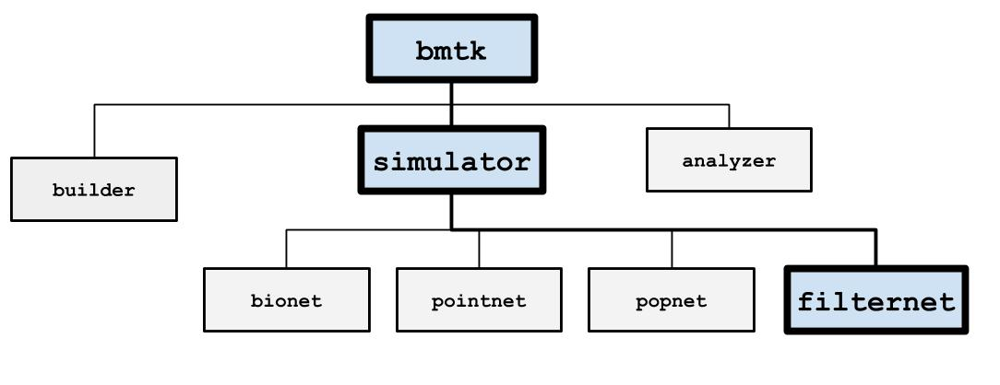
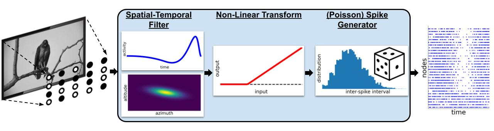

FilterNet#
{kind=link}

FilterNet simulates the effects of visual stimuli onto a receptive field. It uses LGNModel simulator as a backend, which uses neural filters to simulate firing rates and spike trains over a given time course and stimuli. It is based on a linear-nonlinear-Poisson cascade model with options for choosing different types of spatial, temporal, or spatio-temporal units that have already been optimized to mimic mammalian thalamic cells:
{kind=link}

FilterNet is useful for generating spike-trains that will be used as the inputs for simulations running in BioNet, PointNet, or PopNet. The procedure is as follows:
Generate filter neurons with a receptive field for each.
Use FilterNet to play images and movies to the receptive fields and generate responses for each unit.
Connect the filter neurons created in step #1 to another network of neurons to simulate.
Use the spike trains generated in Step #2 to see how the network of neurons would respond to different stimuli.
FilterNet Networks#
As with other simulator engines, ex BioNet and PointNet, FilterNet engine will take a network of individual nodes/cells to calculate firing-rates and/or spike-trains of indvidual cells based on incoming stimuli. Unlike BioNet and PointNet that attempts to recreate the electrophysical properties of cells and synapses, FilterNet uses special “filters” to convert sensory inputs like images, movies, and auditory files into cellular activity.
First step to use FilterNet is to create a (currently non-recurrently connected) network of cells to model the sensory system you are trying to model. More specifically a collection of different cells and cell-types, spatially arranged to collect various stimuli from different parts of the receptive field. The prefered method is to use the BMTK Network Builder to create one or more SONATA circuit file(s), then reference the file in the SONATA simulation config. Alternatively you can use the BMTK Python API to add cells one-at-a-time:
If you already have an existing SONATA network of filter nodes/cells, you can import the network into your
simulation prior to calling run function by creating a SONATA JSON config that reference the circuit file(s)
like below:
{
"networks": {
"nodes": [
{
"nodes_file": "$NETWORK_DIR/filter_nodes.h5",
"node_types_file": "$NETWORK_DIR/filter_node_types.csv"
}
]
}
}
Then you can run a simulation using the config file through the command line:
$ python -m bmtk.simulator.filternet config.simulation.json
Or through Python/Jupyter notebook
from bmtk.simulator import filternet
config = filternet.Config.from_json('config.filternet_flash.json')
config.build_env()
net = filternet.FilterNetwork.from_config(config)
You may also use the BMTK Python API to add individual nodes/cells one-at-a-time using the add_node() and/or
``add_nodes()
from bmtk.simulator import filternet
net = filternet.FilterNetwork(...)
toff_ids = net.add_node(
node_id=0
model_template='lgnmodel:tOFF',
x=120.0,
y=60.0,
... # node-specific params
)
ton_ids = net.add_nodes(
N=100,
model_template='lgnmodel:tON',
x=np.random.uniform(0.0, 240.0, 100),
y=np.random.uniform(0.0, 120.0, 100),
dynamic_params='./components/models/tON_TF8.json'
)
Cell Models and Attributes#
When building your network it is important to specify the type of model (using the model_type and
model_template attributes), which defines the general behavior of a cell for a given type of stimulus. Plus
different model-types have different parameters that are required in order for the simulation to run correctly.
Currently FilterNet supports two general categories of sensory networks - VISUAL and AUDITORY. The available cell-models, required parameters, and how the cells maps to the receptive field will be different depending on the input type.
Visual |
Auditory |
|
|---|---|---|
|
Must be set to either virtual or filter |
Must be set to either virtual or filter |
|
lgnmodel:<MODEL_TYPE> |
audmodel:<MODEL_TYPE> |
|
Map to the row along the movie file |
NA |
|
Maps to the column along the movie file |
Distance along cochlear ridge |
Dynamics Parameters |
Inputs#
Currently, FilterNet allows for a number of different types of custom and pre-defined types of stimuli. Changing the type of stimuli requires updating the inputs section in the simulation_config.json file.
Allows playing a custom movie file in the form of a three-dimensional matrix saved in a npy file.
{
"movie_input": {
"input_type": "movie",
"module": "movie",
"data_file": "/path/to/my/movie.npy",
"frame_rate": 1000.0,
"normalize": true,
"y_dir": "down",
"flip_y": false
}
}
movie: Link to a 3-dimensional (time, y, x) matrix representing a movie (where time is equal to the number of frames in the movie).
frame_rate: frames per second
normalize: Allow the option to normalize the input movie to have contrast values between [-1.0, +1.0]. * If set to true, FilterNet will attempt to infer the current range of the original movie from the data (most movies use contrast between [0, 255] or [0.0, 1.0]. * If the original movie has a unique range, users can specify the min/max contrast for the original movie
`"normalize": [0.0, 100.0]`y_dir: Direction of the y-axis in the movie. Options are “up” or “down” (default: “down”).
flip_y: Flip the y-axis of the movie (default: false).
Plays a drifting grating across the screen
{
"gratings_input": {
"input_type": "movie",
"module": "grating",
"row_size": 120,
"col_size": 240,
"gray_screen_dur": 0.5,
"cpd": 0.04,
"temporal_f": 4.0,
"contrast": 0.8,
"theta": 45.0,
"phase": 0.0,
"degrees_per_pixel": 1.0,
"y_dir": "down"
}
}
row_size, col_size: width and heigth dimensions of screen in pixels.
grapy_screen_dur: displays an optional gray screen for a number of seconds before the grating starts. (default: 0)
cpd: spatial frequncy represented as cycles per degree. (default: 0.05)
temporal_f: temporal frequency in Hz. (default: 4.0)
theta: angle of the drifting gratings, in degrees (default: 45.0)
phase: temporal phase, in degrees (default: 0.0)
contrast: the maximum contrast, must be between 0 and 1.0 (default: 1.0)
degrees_per_pixel: sampling pitch of the movie in degrees per pixel (default: 1 / (cpd * 10))
y_dir: Direction of the y-axis in the movie. Options are “up” or “down” (default: “down”).
Note: Theta is always defined as counterclockwise rotation from the x-axis regardless of how the Y-axis is defined.
Creates a bright (or dark) flash on a gray screen for a limited number of seconds
{
"full_field_flash": {
"input_type": "movie",
"module": "full_field_flash",
"row_size": 120,
"col_size": 240,
"t_on": 1000.0,
"t_off": 2000.0,
"max_intensity": 20.0,
"y_dir": "down"
}
}
row_size, col_size: width and height dimensions of screen in pixels.
t_on: time (ms) from the beginning on when to start the flash
t_off: length (ms) of flash
max_intensity: intensity of screen during flash (>0.0 is brighter, <0.0 is darker) compared to a gray screen.
y_dir: Direction of the y-axis in the movie. Options are “up” or “down” (default: “down”).
Creates a spreading black field originating from the center.
{
"looming_input": {
"input_type": "movie",
"module": "looming",
"row_size": 120,
"col_size": 240,
"frame_rate": 1000.0,
"gray_screen_dur": 0.5,
"t_looming": 1.0,
"y_dir": "down"
}
}
row_size, col_size: width and height dimensions of screen in pixels.
frame_rate: frames per second
gray_screen_dur: duration of the initial grey screen (seconds)
t_looming: time of the looming movie (seconds).
y_dir: Direction of the y-axis in the movie. Options are “up” or “down” (default: “down”).
Optimization Techniques#
The time required to generate spikes will depend on the number of cells in the network, the stimulus type, complexity of the cell-models; among other factors. The full simulation time can take a few seconds to a few hours. The following options may sometimes be utilized in order to significantly speed up the process.
The MPI library allows the simulation to be parallelized across multiple processors and machines for use in an HPC cluster or even on a single machine with multiple cores. FilterNet can take advantage of using MPI automatically. Modelers will need the following installed on their machine: * Either OpenMPI or MPICH2 * mpi4py
On most HPC clusters these will be already installed. For personal machines you can often install using either pip install mpi4py or conda install -c conda-forge mpi4py. Then to run across <N> different cores execute your run_filternet.py script using
`bash
$ mpirun -n <N> python run_filternet.py config.json
`
Or if using a scheduler like slurm you can often use the srun command instead (instructions for scheduling parallel jobs on an HPC will vary depending on the institute).
The results will be the same as if running FilterNet on a single core, the results stored in the same directory as specified in the config file.
You can also optimize FilterNet run-time using the Numba python libary (with and without MPI). To install numba in your python environment:
`bash
$ pip install numba
`
If Numba is installed, FilterNet will automatically use it to compile some time-consuming functions. It will also detect if MPI is used simultaneously and will turn off Numba’s parallelization to avoid conflicts.